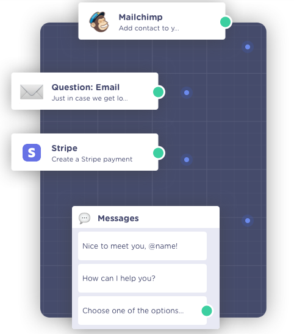
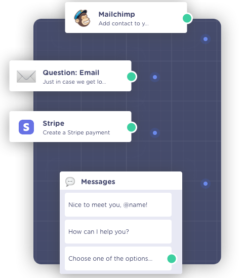
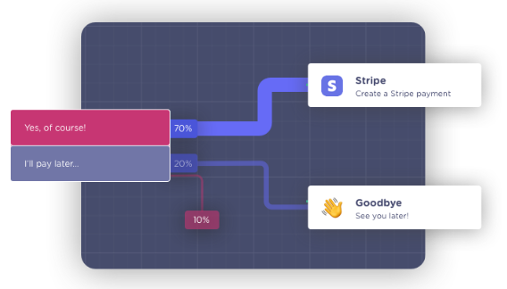
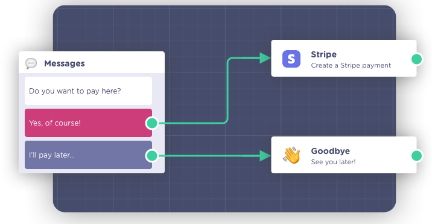
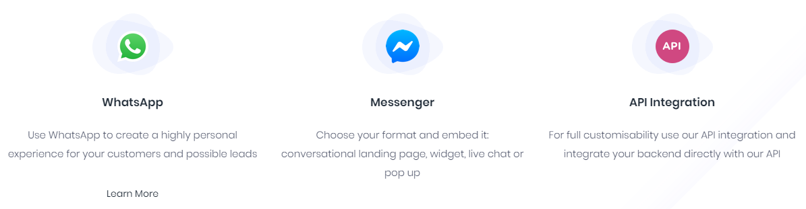
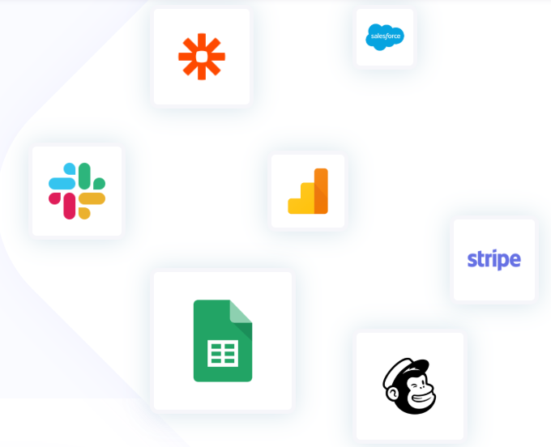
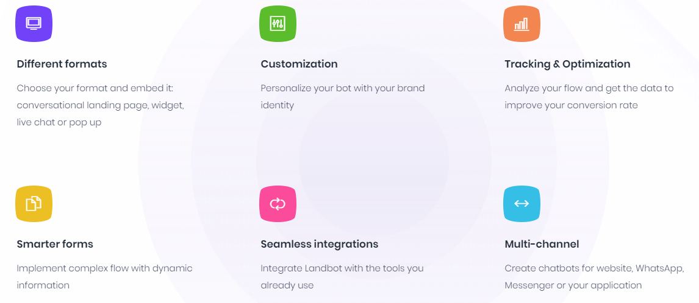

Hey! 👋 My name is Landbot and I transform websites into Conversational Experiences.
Would you like to create your own chatbot? 🤖

It's easy, beautiful and FREE


 

Forget about the IT guy Create lead generation forms and integrate them with the tools you already use in just a few clicks. Engage potential customers, score leads, condition the messaging depending on the visitor’s choices using a beautiful, user-friendly editor. Send the information straight to your CRM without a single line of code.
Find out what works, and fix what doesn't. Take your data-scientist-hat off and analyze conversions step-by-step at a glance. Conversational websites, landing pages or forms let you make decisions based on real-time performance & customer journey flow. Push changes and improve your conversion rates with a couple of clicks.
Fun and simple on the outside, rich and powerful on the inside. Imagine scoring and generating leads by guiding them through several different forms based on their answers! Landbot lets you create complex conversational chatbots using your simpler pre-set forms. Put your Landbots together like Lego bricks! It has never been easier or quicker to cover every step of your conversion funnel.
Interact. Everywhere.
Integrate your favorite services We have everything from Slack to Google Sheets and are constantly expanding our integrations
Power in Simplicity
+1M Monthly Conversations
Witness the power of our no-coded, fully customizable chatbot that lives on your website and talks to your visitors 💬😻🤖